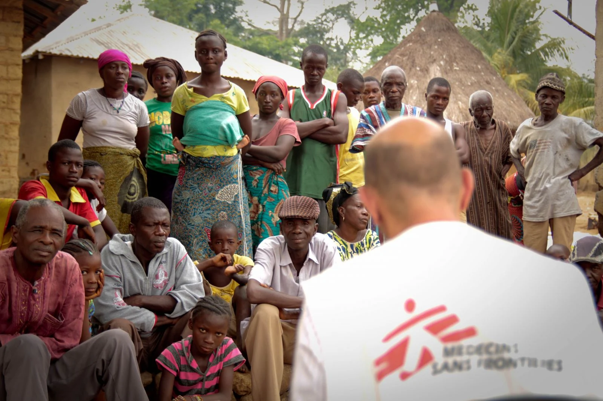

A Médicos Sem Fronteiras foi fundada em 1971 por um grupo de médicos e jornalistas, com o objetivo de oferecer assistência médica rápida e eficiente a pessoas em situações de emergência. Desde então, tem atuado em mais de 70 países, enfrentando desafios como guerras, epidemias, desnutrição e catástrofes naturais, sempre com independência, neutralidade e imparcialidade.
Nossa equipe é composta por profissionais dedicados, entre médicos, enfermeiros, gestores e especialistas em logística, que trabalham de forma coordenada para levar ajuda humanitária a quem mais precisa. Com atuação em diversos contextos e países, eles compartilham o compromisso de salvar vidas e aliviar o sofrimento de populações vulneráveis.
"Parece que ninguém se importa com o conflito no Sudão"
- Mohammed Bashir"Nossas vidas foram dedicadas à família, ao trabalho humanitário e ao nosso amado Sudão"
- coordenadora-geral de projeto Majda Rizq